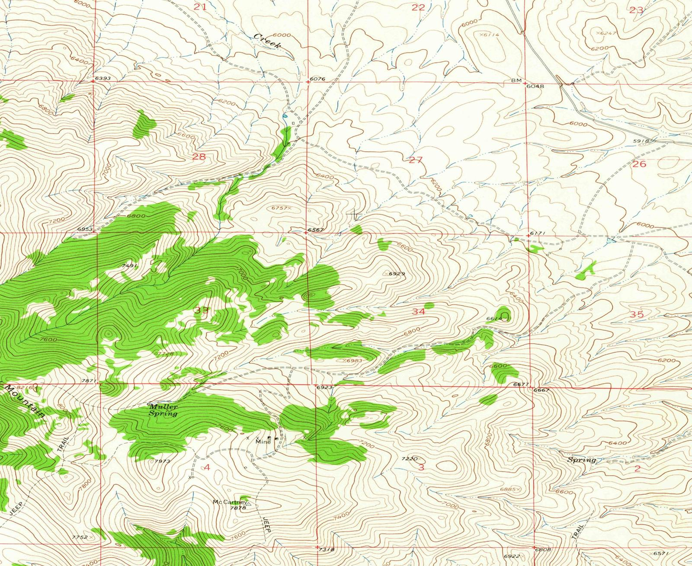

Steps
- The scan has no coordinates yet. The map on the right is a USGS basemap of the same mountains.
- Tap a landmark on the scan (Mulkey Spring, a section number, a stream bend, or a trail junction). Then tap that same place on the basemap. Zoom in before you tap.
- Add at least 4 pairs. Drag a numbered marker, or delete it, and watch the RMS change.
- Compare 1st order (affine, the right model for a flat scan) with 2nd order once you have 6 points.
Unreferenced scan

Reference map
Add control points to compute an RMS error.
How this maps to ArcGIS Pro
Select the raster and open the Georeference tab. In the Adjust group, click Add Control Points. Click the scan, then click the matching place on the reference layer, or type the coordinate. Set Transformation to 1st Order Polynomial (an affine fit: shift, scale, rotation, and skew). Residuals and the total RMS error are listed in the control-point table. Delete a bad link or move it and the RMS updates.
2nd Order Polynomial needs more links and can bend the scan. A lower RMS is not automatically better: with only a few extra points the surface can pass near bad links by curving between them. That is overfitting. A scanned sheet of paper is nearly flat, so the 1st-order fit is usually the honest one.